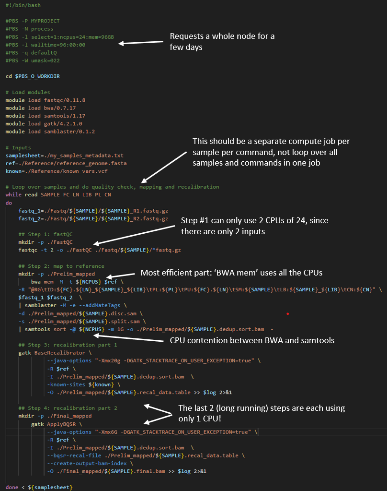
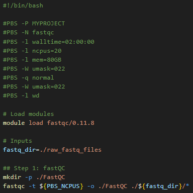
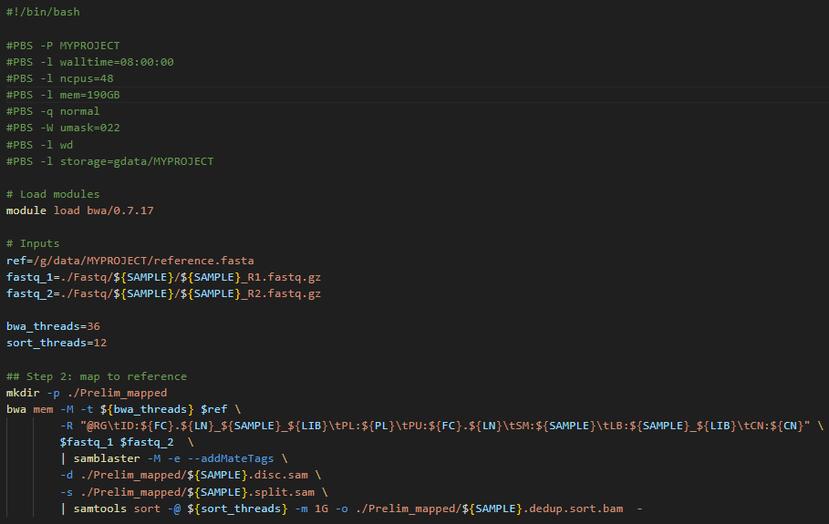

Working within walltime limits
TO BE COMPLETED
Introduction
In this section, we will discuss ways of adapting your long walltime jobs from Artemis to NCI platforms.
The main challenges users may face adapting Artemis workflows to Gadi are:
- Gadi walltime limit of 48 hours
- Adjusting PBS directives to suit Gadi requirements and queue structure
- Lack of internet access for Gadi compute nodes
- Data transfer
- Understanding NCI accounting of KSU, disk and iNode limits
- Automatic 100-day Gadi /scratch purge policy
- Software installation and version upgrades on Gadi
- Job arrays not supported on Gadi
In this section, we will look at the first challenge on this list. For the remaining challenges, please visit the specific linked content. We will run training sessions on some of these during the lead up to the Artemis decomission date.
Gadi walltime limit
The maximum walltime permitted on any of the Gadi HPC queues is 48 hours. In some cases, the walltime may be less (for example when requesting large numbers of nodes, or on copyq). See the Default walltime limit column of the queue limits tables to discover the maximum walltime that applies according to your resources requested.
Given that Artemis has much longer maximum walltimes, we understand this may generate some apprehension. Staff at both NCI and SIH can support you in adapting your workflows to NCI if you are still having difficulty after reviewing the suggestons below.
In short, there are 3 options to adapting a long-running Artemis workflow to NCI:
- Split your single large job Artemis into a series of smaller jobs on Gadi
- Use NCI’s Nirin cloud instead of Gadi
- Special exception to the Gadi walltime limit granted on a case-by-case basis
Option 1. Split or checkpoint your job
There are many advantages to splitting your job up into smaller discrete chunks.
- Checkpointing: if one of your jobs in a series of fails, you only need to resubmit that discrete job script, rather than either the whole job or some finnicky “hashed out” version of your very long and comlex workflow script. This simplifies debugging and rerunning, saves you hands-on time and walltime, minimises errors, and saves KSU
- Ease of code maintenance: changing part of workflow, for example adjusting parameters, input files or software versions, is far simpler to implement for shorter chunks of code than it is for a long and complex code with many steps
- Ease of benchmarking: Different stages of a complex workflow typically have different compute requirements, for example some long running single core tasks coupled with some GPU tasks, some high memory, some high CPU tasks etc. Benchmarking is more straightforward and informative when performed on discrete workflow chunks.
- Greater job efficiency: By benchmarking and optimising the resource configurations for each stage of the workflow, the series of jobs can be placed on an appropriate queue, and will not be reserving (and being charged for) unused resources. This will reduce KSU usage and resource wastage.
- Shorter queue times: Requesting resources for a shorter walltime will result in a shorter queue time. The NCI scheduler is geared towards favouring ‘wider and shorter’ jobs, ie more CPUs/nodes for less time, over ‘taller and slimmer’ jobs (ie fewer CPUs/nodes for a longer time). For example a job may queue for less time if it requests 48 CPU for 1 hour, compared to 1 CPU for 48 hours. Of course the queue is highly dynamic and this cannot be predicted or calculated ahead of time, but in general, shorter walltimes will lead to shorter queue times.
At the end of this section we will demonstrate a handful of examples of real long-running Artemis workflows that have been adapted to fit within Gadi’s shorter maximum walltime.
Option 2. Use Nirin
Your NCI KSUs can be used on Nirin as well as Gadi. Nirin has the advantage of theoretically infinite walltime, along with internet access which is another limitation of the Gadi compute queues.
As such, Nirin presents an easily accessible solution for users whose jobs are irreconcilably affected by the walltime and lack of internet access aspects of Gadi.
The Nirin quickstart guide walks you through the process of setting up your instance, including easy to follow screenshots for each step.
Option 3. Gadi special walltime request
If your job cannot be split/checkpointed into a series of shorter jobs, and the Nirin flavours are not suited to your compute needs, you can make a request to NCI for an increase to the walltime. NCI will ask you to provide details of your job including the relevant code saved on Gadi, as well as a description of why you require a lift to the walltime for this particular job.
From the Gadi queue limits page:
“If a higher limit on core count (PBS_NCPUS) and walltime is needed, please launch a ticket on NCI help desk with a short description of the reasons why the exception is requested. For example, a current scalability study suggests linear speedup at the core count beyond the current PBS_NCPUS limit. We will endeavour to help on a case-by-case basis”
Examples of split/checkpointed jobs
Example 1: A workflow with multiple discrete commands
In the field of genomics, the raw data is processed through a series of steps before the final output files are produced. Many groups perform all of these steps within a single, multi-command job, in order to only have to run one job to perform all the work.
By splitting apart each of these steps so that each is its own job, we can improve code manageability, reduce walltime, and increase overall processing efficiency.
While this does require some extra effort in terms of submitting multiple processing jobs rather than just one, the benefits described above far outweigh this. The burden of multiple job submission can be ameliorated by parallel processing per sample, and even further by a workflow manager such as Nextflow. For an exammple Nextflow genomics processing workflow, view this repository, and for parallel jobs on Gadi, see this section.
In the below Artemis script example, a samplesheet is read in containing metadata about 10 samples to be analysed. Each sample has one pair of raw ‘fastq’ input files that are processed through an analysis loop containing 4 steps:
| Step | Task | Input | Walltime (hrs) | CPUs used |
|---|---|---|---|---|
| 1 | Quality check | Raw data | 2 | 2 |
| 2 | Map to reference | Raw data | 7 | 24 |
| 3 | Recalibration metrics | Output of step 2 | 5.5 | 1 |
| 4 | Apply recalibration | Output of steps 2 + 3 | 8.5 | 1 |
The total walltime is 23 hours per sample, so the requested walltime in the below script is 240 hours (10 samples x 24 hours per sample)
There are multiple inefficiencies within this method, giving rise to an inflated walltime requirement of ~ 1 day per samnple plus a very low overall CPU utilisation of the job.

Now compare the above to a Gadi workflow, where each of these 4 steps are separated into their own job, with appropriate resource requests per job.
Job 1: Quality check
The fastQC tool can only run one thread per file. If you provide multiple files through globbing, and provide multiple CPUs to the -t flag, it will process as many files at a time as the value you have provided to -t.
So for the current example with 10 samples each with a pair of files, we have 20 files and can run this section of the analysis workflow with 20 CPU. In this way, 100% of the 20 CPU requested are utilised, unlike the Artemis script above, where only one sample’s fastq files at a time could be analysed and thus used only 8.3% (2 CPU used of 24 requested).

Job 2: Map to reference
The bwa tool can multi-thread, and tool benchmarking in peer-reviewed literature shows almost perfect scalability up to a thread count of 36. Gadi normal queue has 48 CPU per node, so you could run this job with 48 CPU, assigning 36 CPU to the mapping and 12 CPU to the piped sort command.
The key detail is to map each sample’s raw data as it’s own distinct job, instead of looping over each sample in series like the demo Artemis script. On Artemis, we can do this with job arrays but these are not available on Gadi. NCI and SIH recommend the use of nci-parallel (a custom wrapper utility for OpenMPI) for repeated runs of the same job script - see parallel jobs on Gadi for more details.
To avoid complicating this walltime section, we will provide an example of using a simple for loop for job submission. NOTE: loops should ONLY be used for a VERY SMALL NUMBER OF JOBS, and always include a sleep in the loop! NCI does monitor the login nodes and serial offending with long for loops will be targeted!
Note that the directive for job name is provided on the command line as an argument to qsub, the sample metadata is provided with the qsub -v varname="varvalue" syntax, and a 3-second sleep is used to avoid over-loading the job scheduler.
Script:

To submit 10 samples as separate jobs:
while read SAMPLE FC LN LIB PL CN
do
qsub -N map-${SAMPLE} -v SAMPLE="${SAMPLE}",FC="${FC}",LN="${LN}",LIB="${LIB}",PL="${PL}",CN="${CN}" step2_map.pbs
sleep 3
done < my_samples_metedata.txtJob 3 and 4: Recalibration metrics and apply recalibration
Note from the table above that these two steps do not multi-thread, and both have long walltimes. If you require a task like this in your workflow, it’s critical to interrogate the tool documentation for ways to increase throughput and efficiency.
Within this tool’s guide, we find there is a -L interval flag, which allows the tool to operate over discrete intervals of the reference file, rather than scanning the sample data over the whole reference file in one long running single-CPU task. The smaller the interval, the faster the run time, and the resultant output files are merged.
Since this section is not a specialised bioinformatics training, we will not go into details for this tool here, but instead provide the main overview of steps and how with a bit of extra work, massive walltime savings can be made.
Steps 3 and 4 from the Artemis workflow are now executed as 5 jobs:
- Split the reference file into intervals using the tools’s split intervals function
- Run step 3 over each interval for each sample as a separate job. For 32 intervals and 10 samples, that is 32 * 10 = 320 single-CPU jobs. To do this, we would use
Open MPIvia nci-parallel - Merge the 32 outputs per sample into a single per-sample file with the tool’s merge function, using
nci-parallelto launch the 10 sample * 1 CPU jobs - Run step 4 over each interval for each sample as a separate job, using the merged output of step 3, another 32 * 10 = 320 single-CPU jobs launched in parallel by
nci-parallel - Merge the 32 outputs per sample into one final output file per sample with the tool’s merge function, using
nci-parallelto launch the 10 sample * 1 CPU jobs
As you can see, our workflow which was one long-running single job with very poor overall CPU utilisation has now been split into 7 jobs. This may sound tedious, yet the massively improved walltime and CPU utilisation will pay off, and you will get to your results in a much faster turnaround time with fewer KSU expended. In this example, walltime of 240 hours has been reduced to 10 hours!
| Step | Task | Input | Walltime (hrs) | CPUs used per job | CPUs total |
|---|---|---|---|---|---|
| 1 | Quality check | Raw data | 2 | 20 | 20 |
| 2 | Map to reference | Raw data | 7 | 48 | 480 |
| 3 | Split intervals | Reference file | <1 | 1 | 1 |
| 4 | Recalibration over intervals | Output of steps 2 + 3 | <1 | 1 | 320 |
| 5 | Merge recalibration tables | Output of step 4 | <1 | 1 | 10 |
| 6 | Apply recalibration over intervals | Output of steps 2 + 5 | <1 | 1 | 320 |
| 7 | Merge recalibrated final output | Output of step 6 | <1 | 1 | 10 |